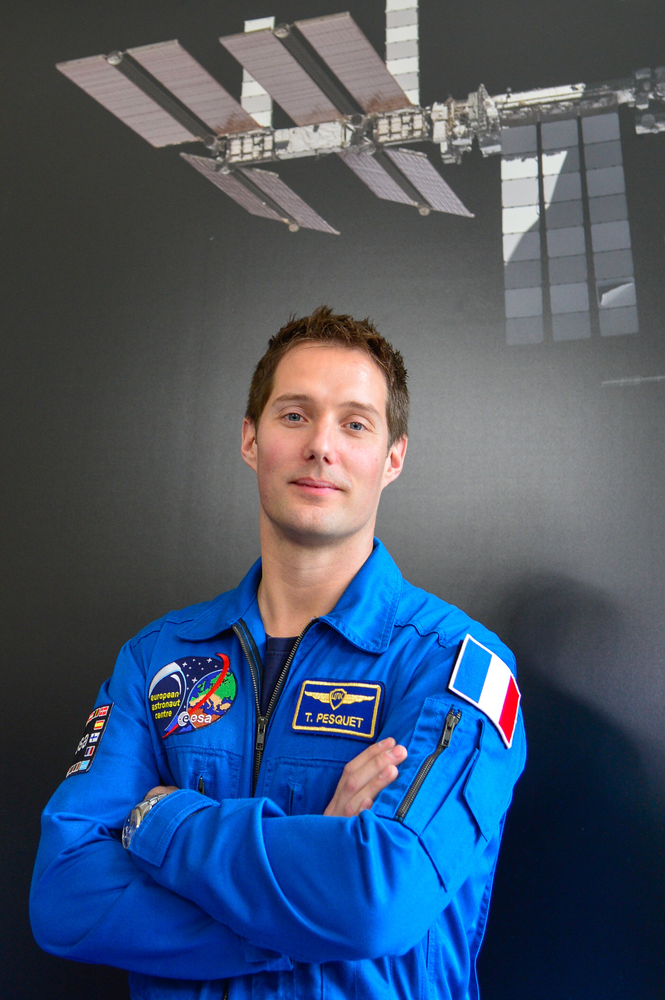
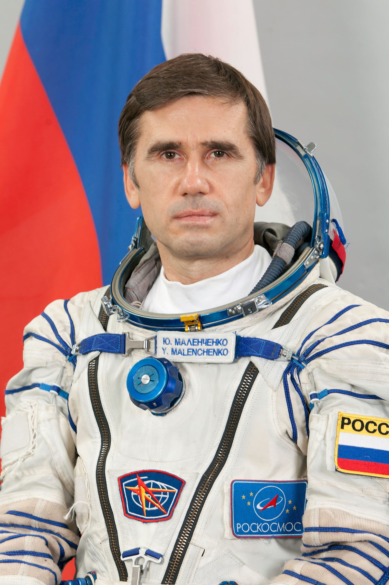
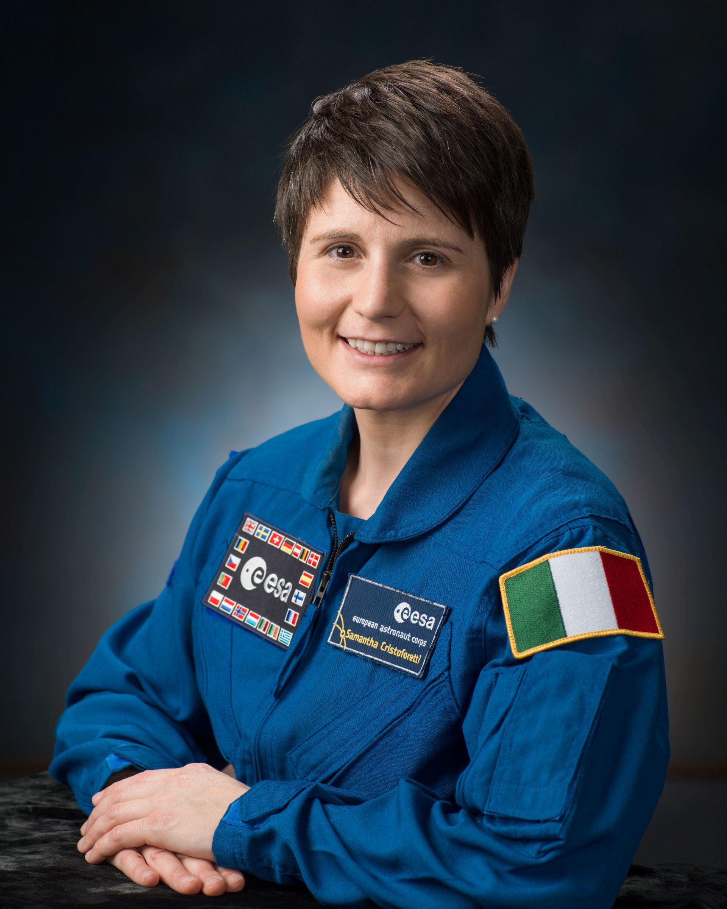

L' ISS

-
L'ISS (Station Spatial Internationale) a vu le jour en 1998. Sa construction a du être réalisée par 16 Etats :
le Canada, le - L'ISS mesure 108 m de long pour 75 m de large et 45 m de hauteur et sa masse avoisine les 450 tonnes.
- Aujourd'hui, les pays participants a l'ISS sont les Etats-Unis, la Russie, le Canada, le Japon et l'Europe.
Son coût
Mais il faut savoir que le coup est divisé en plusieurs éléments. Il y a d’abord eu le cout de construction d’environ 100 milliards de dollars, il y a le coût de maintenance, de ravitaillement en nourriture et en équipement qui nécessite le lancement de fusée pour atteindre l’ISS. Donc le coût continue d’augmenter.
Mais ce projet subit des critiques, notamment dû à son coût, qui ne justifie pas les résultats scientifiques obtenus et les résultats potentiels tandis que les partisans de la Station spatiale internationale mettent en avant l'expérience acquise dans le domaine des séjours longs en orbite et l'importance symbolique d'une présence permanente de l'homme dans l'espace.
Ses Occupants
- Frank Rubio (Américain) ;
- Nicole Mann (Américaine) ;
- Josh Cassada (Américain);
- Koichi Wakata (Japonais) ;
- Sergey Prokopyev (Russe) ;
- Dmitri Petelin (Russe) ;
- Anna Kikina (Russe) ;
- Stephen Bowen (Américain) ;
- Warren « Woody » Hoburg (Américain) ;
- Sultan Alneyadi (Émirati);
- Andrey Fedyaev (Russe).

Thomas Pesquet (France) : Thomas Pesquet est un astronaute français de l'Agence spatiale européenne (ESA) qui a effectué deux missions à bord de l'ISS en 2016-2017 et en 2021.

Yuri Malenchenko (Russie) : Yuri Malenchenko est un cosmonaute russe qui a effectué plusieurs missions à bord de la station, dont une en tant que commandant de l'ISS. Il a été l'un des premiers occupants de la station lors de sa phase initiale.

Samantha Cristoforetti (Italie) : Samantha Cristoforetti est une astronaute italienne de l'ESA qui a passé plusieurs mois à bord de l'ISS en 2014-2015. Elle est la première femme italienne à avoir été dans l'espace.